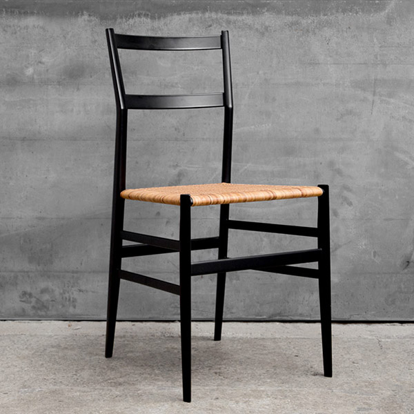

The Chairs of Gio Ponti
In pursuit of the ultimate ideal of seating. Pellentesque habitant morbi tristique senectus et netus et malesuada fames ac turpis egestas. Vestibulum tortor quam, feugiat vitae, ultricies eget, tempor sit amet, ante. Donec eu libero sit amet quam egestas semper. Aenean ultricies mi vitae est. Mauris placerat eleifend leo.
The D.156.3 Armchair
Designed by Gio Ponti and produced for Altamira, an American company founded by the nephew of the Spaniard De Cuevas, was displayed in the company’s showroom in New York, along with furniture by Ico Parisi, Franco Albini, Carlo De Carli, Ignazio Gardella and others, chosen from among the most representative exhibitors at the 10th Milan Triennale.
- Height: 34”
- Width: 28”
- Depth: 38.25”
The Superleggera
While the frame exploits the inherent lightness and flexibility of ashwood, the seat surround is in beech, which is more close-grained and stronger. The wood parts are created by machine, and hand-finished, glue being applied with a brush, the excess being wiped off, and the seat being hand-woven. Thus do crafts expertise and industrial innovation come together in what we could call a “prime object”, informed by the chair-making traditions of Chiavari, in Liguria, northern Italy.
Key Characteristics
- Lightweight
- Durable
- Comfortable